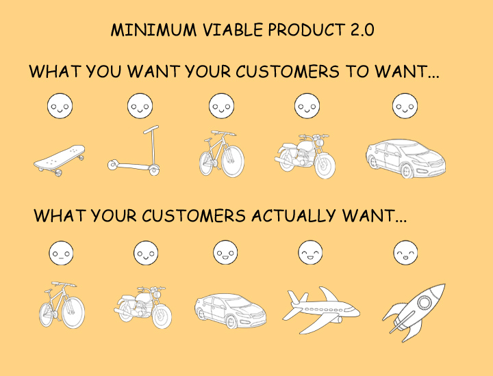
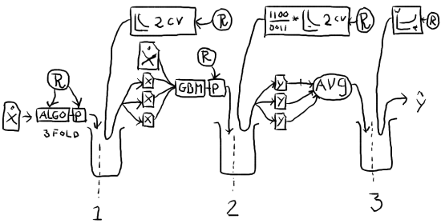
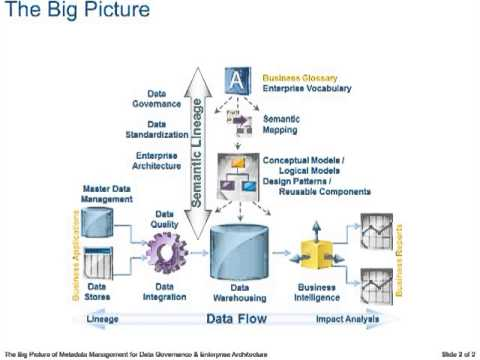

How do I approach a data science task? Where do I start?
How do I approach a data science task? Where do I start?
What is needed of me? How do I measure success? What do I need?
How do I structure my workplan?
How do I approach a data science task? Where do I start?
What is needed of me? How do I measure success? What do I need?
How do I structure my workplan?
How do I structure my dataflow? What data-record transformations do I use?
What data-feature transformations do I use?
How do I choose my learning model and optimization algorithm?
How do I approach a data science task? Where do I start?
What is needed of me? How do I measure success? What do I need?
How do I structure my workplan?
How do I structure my dataflow? What data-record transformations do I use?
What data-feature transformations do I use?
How do I choose my learning model and optimization algorithm?
How do I achieve and maintain agility and scalability?
How do I secure user acceptance?
Agenda
- Workflow:
- POC (domain, data, algo, examples)
- Escalation (algo, engineering)
- Data Wrangling:
- Objectives
- Procedures
- Example
- Feature Engineering:
- Manual / Learned
- Structured / Unstructured
- Diagnostics & Debugging
- Communicating Results
- Next time (in part 2): How to get people to let the computer have a go at some standing problem?
Workflow
Sprint
| Week | Sun | Mon | Tue | Wed | Thu |
|---|---|---|---|---|---|
| 1 | Release version | Release hotfix | Kick-off (requirements & specs) | Research | Research |
| 2 | Development | Development | Development | Development | Development |
| 3 | Test (QA) | Test (QA) | Alpha testing | Test (STG) | Test (STG) |
Proof Of Concept
Business domain
- Domain model
- Ideation/Hypothesis: Value proposition
See Counter-Factual Evaluation - Set in place a (production) feedback mechanism
- Timeliness
- Adaptivity (how fast is the world changing?
→ learning rate & validation technique): Event (Reinforcement Learning) vs. batch vs. learn once - Reactivity (how fast does the response have to be?
→ prediction latency): In-app event, e-mailed report,... - Quantitative specifications
- Minimally Viable Product (MVP) requirements → KPIs
- scoring & test method: overall performance, particular mission-critical properties
Data domain
- Identification of (possibly) relevant data sources
- Data munging (create data pool by fusion of raw data-sources, e.g. aggregation)
- Data model
- Data visualization and exploration
- Data cleansing/validation
- Data transformation (e.g. normalization)
Algorithm domain
- Feature* engineering
- Auxiliary models (e.g. effect of time elapsed from feature sampling until target sampling, or prediction).
- Choice of learning model and algorithm:
* 'Feature' in the data science sense, not the software development sense.
Model
- Supervised vs. unsupervised (i.e. quantity and quality of labeled data)
- Univariate vs. multivariate (goal or cost is function of one / many response variables)
- Regression vs. Binary Classification vs. Multi-label Classification vs. Clustering (identify supervised learning task by label, then provide appropriate scoring metrics. e.g. categorical cross-entropy or multi-class log loss for multi-lable classification)
- Parametric vs. non-parametric
- Discriminative (predictive) vs. Generative (causal)
- Accommodate or ignore feature interactions
Optimization algorithm
- Synchronous vs. asynchronous learning
- Synchronous (On-line): (stochastic?) iterative solution
- Real-time (RT): per-event
- Near-real-time (a.k.a. "near-time"): mini-batch
- Asynchronous (Off-line): batch solution
- Non-parallel vs. Parallel/Distributed (find some separability)
- Stochastic Approximation
- Probabilistic data structures
(c.f. Probabilistic Programming) - meta-heuristics
- Split the cost function, and then optimize (e.g. ADMM)
- GPGPU
Duality
Consider solving the dual problem- Apply Fourier / Laplace transform for non-stationary joint distributions
- Dual SVM problem
- Matrix Factorization using ALS (particularly where the inverse problem is also of interest, such as in Recommender Systems)
- Projection to Latent Structures (PLS)
Regularization
- L-1 (LASSO): Induce feature sparsity (L-0 will induce entry-wise sparsity, but is not convex)
- L-2 (Tikhonov regularization a.k.a. ridge regression): Induce smoothness, reduce multicollinearity
- Some of each (Elastic net)
Model complexity vs. feature complexity
- Long learn time vs. long predict time
- Predictive power is sealed at learn-time vs. predict-time
Learning Algorithm Example
e.g. Supervised, parametric, generative, non-interacting, lightweight model, using an iterative algorithm:
GLMs using Stochastic Gradient Descent.
e.g. Supervised, non-parametric, discriminative, interacting, heavyweight model, using a batch algorithm:
Escalation
Algorithm domain
Meta-learning
- Ensemble learning: 1 + 1 = 3
- Re-sampling
- Deterministic (jackknifing)
- Stochastic (bagging)
- Stacked generalization / blending
- Boosting
- AdaBoost
- XGBoost
- ...
- Self-modification:
- Epochs
Model validation & selection
- Cross-validation
- Information Criteria
- Confusion Matrix
- AUC
- A/B user testing: α, β, production
Learning Problem => Validation Method
- Batch Learning: The learning process has no effect on the subject learned => can validated a particular model.
- On-line Reinforcement Learning: Every time we take an action, the environment may react => only A/B testing.
"You could not step twice into the same river."
-- Heraclitus
Software development domain
Product integration
- Interface: In-database, API, REST, dashboard, ...
- Data pipeline DAG
- Edges:
- Interface: Monads (Single Abstract Method type, e.g. Java @FunctionalInterface)
- Implementation: Functors (function reference plus state, e.g. Java method reference)
- Vertices:
- Spouts: Data sources
- Bolts: Data pools along the pipeline (for resilience, auditing, debugging, etc.)
- Edges:
- Scalability: Parallelization (e.g. submit micro-batches for prediction, rather than single events), etc.
- Architecture: 3-tier warehouse, Lambda (SMACK stack)...
- Test plan
- Documentation
- Configuration management: input parameters, including hyper-parameters
- Model ID
- Model description
- Model parameters
- Datetime in-force
- Continuous QA: Monitor for performance degradation
- Persist historical results (and parameters used to get them, if practical. If not, store the historic models as serialized objects).
Auditing
- Logs
- Debug plots
- DB
- Timestamp
- Model ID
- Source code version
- Input
- Output
- Performance metrics
Data Wrangling
Objectives
- No missing values (null, undefined, N/A, ...)
- No invalid values (NaN, inf, ' ', ...)
- No duplicate samples
- Enumerable values only (enum, int, or float / double; e.g. no str / object)
- Normalized values (each enumerable feature should have values symmetric about the origin, i.e. with zero mean, and unit standard deviation)
- Feature engineering (domain logic + intuition => hypotheses. Since some compound features will derive the greatest contribution, this will usually be followed with some dimensionality reduction)
Exploratory Data Analysis
- Overview data schema
- Data visualization
- Use a notebook (Jupyter, Zeppelin, etc.)
- Boxplot (univariate or bivariate, i.e. Bagplot)
- Test assumptions of normality and homoscedasticity using 4-Plot
Dimensionality Reduction
- Record linkage
- Database normalization
- Matrices
- Reshape matrices to standard shape
- Sparse matrices
- Interactions
- Scatter-plot matrix
- MANOVA
- cross-correlations (also auto-correlations in the case of time-series data)
Data cleansing
Cleanse features with missing, invalid, innumerable, or un-normalized values:- Missing: Drop (filter) entire record or imputate (fill) value?
- If filling in, what with? zero-order = most probable (mode), more complex logic...
- Selection bias: Find ways to compensate for data which was not measured, in order to take the base rate into account.
- Consider using a CART model.
- Invalid: Manipulate (transform) or replace?
More data-record transformations
- Hashing trick (i.e. feature vectorization)
- Text-feature extraction: OneHotEncoder, td-idf (e.g. in both scikit-learn and spark), StringIndexer, Tokenizer, word2vec (e.g. in spark.ml), etc.
Tolerance of Outliers
- Censoring (filtering) or imputation (value truncation, e.g. winsorization) of outliers
- Long-tail effect on location statistic: average vs. median.
- Including a variability statistic (e.g. range, variance)
- Confidence intervals using bootstrapping
- Binning of variables whose dynamic-range is large. Visualize using histograms to select the most appropriate bin intervals.
- Robust Statistical Methods (e.g. Robust Linear Regression, from the Theil-Sen Estimator to Redescending M-estimators)
Value Normalization by Mathematical Transformations
To attain zero mean and uniform (∝ unit) variance:- Logarithmic transformations (log, semi-log, log-log).
- Box–Cox (Power) Transformation
DB Normalization
- Decomposition of composite data into multiple, primitive typed fields
- Aggregation of identical observations using 'sum'/'count' fields.
- Propositionalization: RDB Feature Synthesis (e.g. Deep Feature Synthesis)
Feature selection
- Consider removing noisy features (e.g. mostly missing or unreliable for any other reason), to attempt more concise models first.
- Correlation does not imply causation
- Problem: Some feature A, highly correlates with the target variable, but offers little predictive power.
- Solution:
- Introduce more feature/s which have low correlation with A, or drop A altogether.
- Consider keeping features even if they have low correlation with the target variable, directly.
- Add compound features, as needed. e.g. the kernel trick
Cross-Validation
- Data contamination / leakage: Take care that data present in the test set is not reflected directly or indirectly in the training set.
- For uneven data sets, employ stratified sampling (particularly for classification).
Randomization
- Rare event sampling: Sample a comparable number of non-interesting events as the interesting ones, and give the former a proportional weight when fitting. (Proportional to their original fraction in the sample set)
- Data splitting: The test set should be 20%-30% of the samples, and the rest can be trained on. See also re-sampling.
Data Pipeline
- The various cleansing and compounding stages can be programmed to execute sequentially, as part of an, e.g. spark.ml.Pipeline, and followed by 'train/fit' and 'test/score' phases.
- Feature extraction, preprocessing (including normalization), and selection (including dimensionality reduction techniques such as matrix factorization/decomposition) transformations in scikit-learn or in spark.ml
- Concatenate features from different transformer stages using feature stacking (e.g. in numpy or scikit-learn)
- Rather than using one monolithic model, it can be more robust to aggregate predictions from multiple light-weight models, each using only a few features (for ensemble methods also small number of estimators).
Process engineering
- Scikit-learn Pipeline or spark.ml.Pipeline for conveniently transferring each extractor, transformer, and evaluator from the training phase for use in the testing/validation and prediction phases.
- Model selection and ensemble learning
- Use grid_search to scan hyper-parameters within a reasonable range (probably never exceed two orders of magnitude from standard parameter value).
- Multi-level models: See ensemble/meta- learning
Example: Extract Date & Time by chrono fields
Normalized fields:
- Century (zero-based): e.g. 20 for 20XX
- Year in century: 00-99
- Month of year: 1-12
- Day of month: 1-31
- Hour of day: 00-23
- Minute of hour: 00-59
- Second of minute: 00-59
- Milli of second: 000-999
Derived informative fields:
- Season of year: S/F/W/S
- Week of year: 1-52
- Week of month: 1-5
- Day of year: 1-366
- Day of week: 1-7
- Is weekend? True/False
- Is daytime? True/False
Seasonality
Expect about 15% of metrics to have seasonality. ~70% will have daily period, and another ~25% will have weekly period, leaving no more than 5% for any other periodicity.Feature engineering approaches
Manual Feature Engineering
- Extraction →
- Selection →
- Reduction
Learned Feature Engineering
- Structured data:
- Neglecting interactions: Factorization of the design matrix
- Include interactions
- Regularization
- Pruned CARTs
- Cluster Analysis
- Input k: centroid (also spectral) or distribution based
- Output k: hierarchical or density based
- Unstructured data:
- Artificial Neural Networks
Examples of unstructured data most amenable to ANNs:
- NLP
- media
- audio
- images
- video
Convolutional Net (Deep Learning) image processing hueristic:
- First layer: Pixel-intensity features
- Second layer: Multiple-pixel features (segmentation, etc.)
- Subsequent layers: More complex features/tasks (object recognition, etc.)
Diagnostics & debugging
- Anamnesis
- Last change in parameter values
- Value of regularization function
- Value of cost function
- Value of Kullback-Leibler divergence
- Value of scoring function on training set
- Value of scoring function on test set
- Diagnosis
- Optimization algorithm (cost has not converged)
- High bias (training error >> acceptable test error)
- High variance (training error << test error)
- Optimization objective is not representative
(goal >> score; goal function is negative cost function)
Prescription ℞
- Optimization algorithm does not converge
- Run more iterations
- Change initial parameter values
- Switch to adaptive step size / learning rate
- Switch optimization algorithm (check 6-Plot)
- High bias
- Include more features (which were initially excluded)
- Get/generate new features
- High variance
- Get more training samples
- Exclude more features
- Optimization objective is not representative
- Change meta-parameters (regularization / margin)
- Switch ML model
- Error Analysis How much worse is the current error, relative to perfect performance, due to each system component (data transformation, feature sub-set)? Start backwards from output, and plug in the ground-truth into increasingly earlier components. Check how much the error in output changes with the addition of each component.
- Ablative Analysis How much better is the current error, due to each system component, relative to the performance expected without it? Define the minimal viable system. Then, starting with the full system, remove one component at a time, check the change in error, and stop when reaching a state where no more components can be removed.
Communicating results
Presentation animations
- overview & each top-level step as a separate module
- zoom in on each module, while keeping overall perspective
- non-linear flows: e.g. cycles (feedback loops)
- consider orientation: go from top-down, top-left to bottom-right, left-to-right, outside-in, etc.
- use non-default font, attractive 3D graphics, toned-down colors, and toned-down photos/clipart/icons (only where appropriate beyond doubt)
- hyper-link from each module slide to it's composing modules, and back up to the level above it
- use animated transitions to create a sense of motion (but avoid motion-sickness). For example, strut.io.
impress.js
- Use the source, Luke!
- Editors
- Markdown: Slideshow (impress.js template)
- reStructuredText: Hovercraft!
- GUI: Strut.io